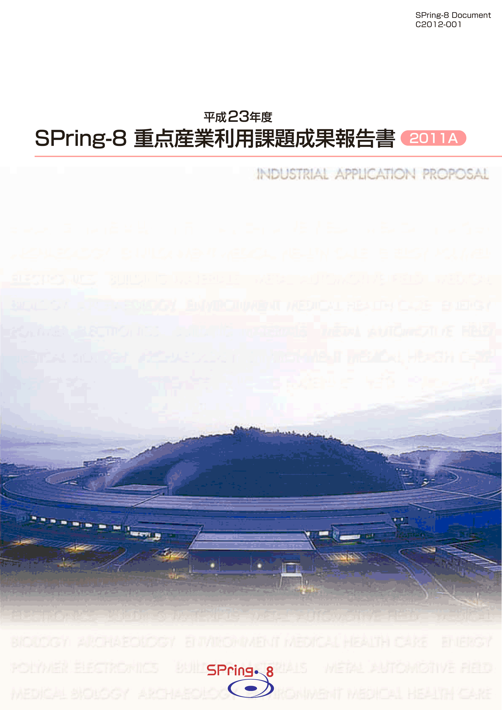
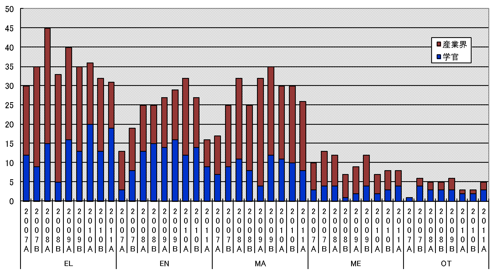
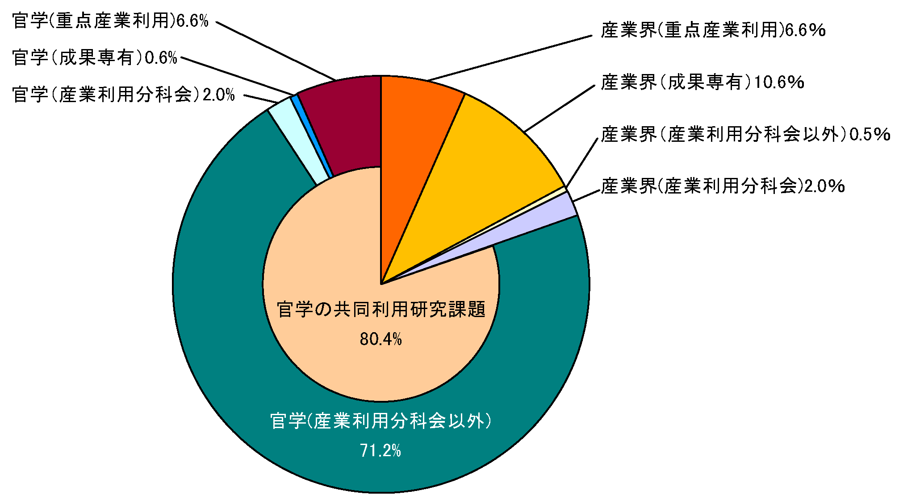
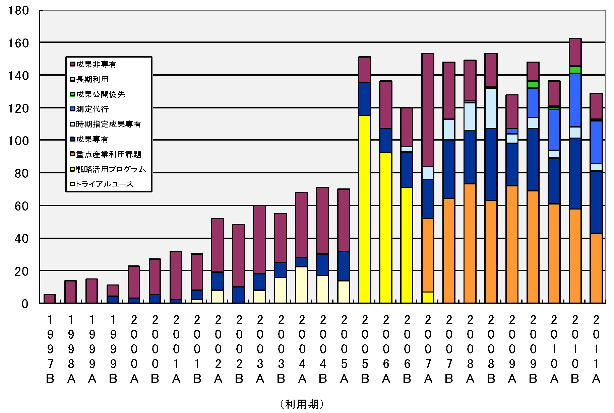
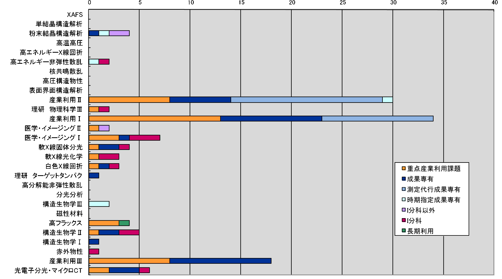
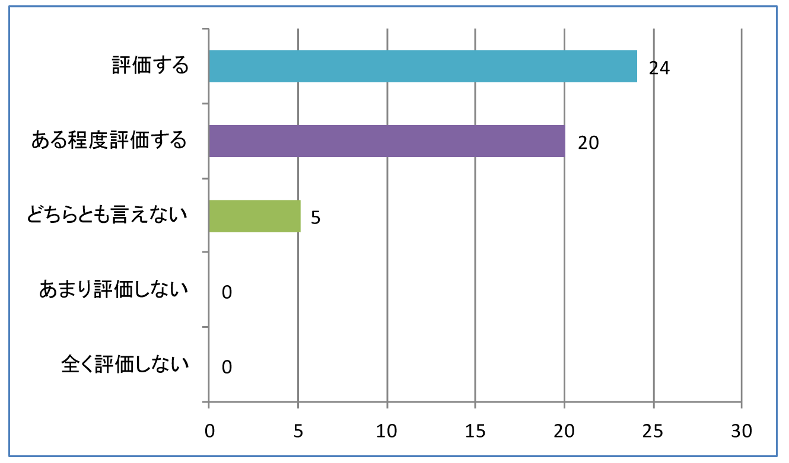
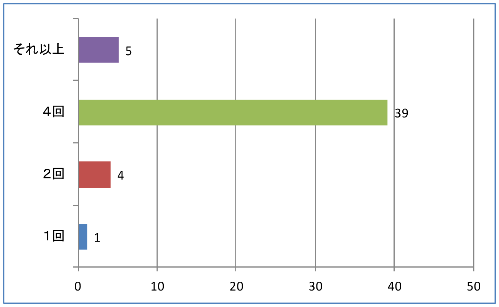
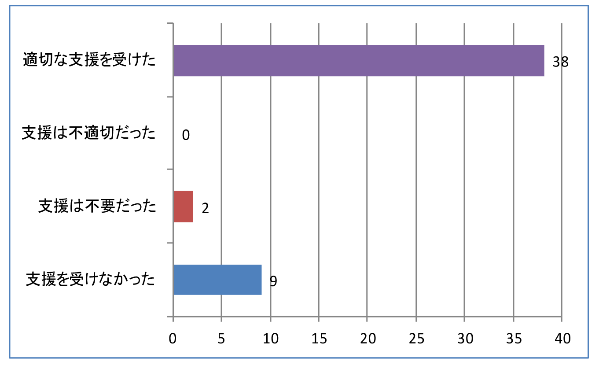
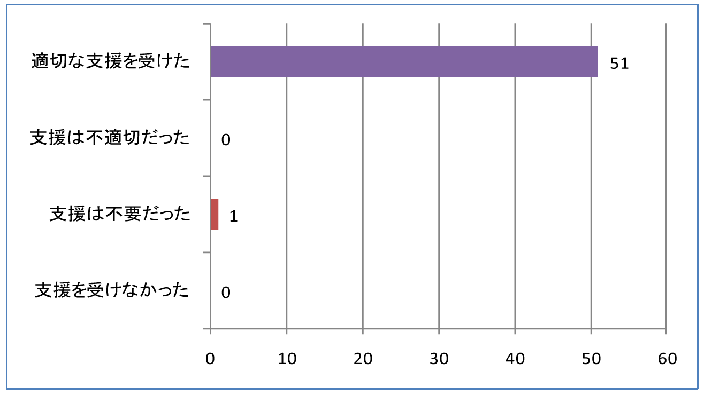
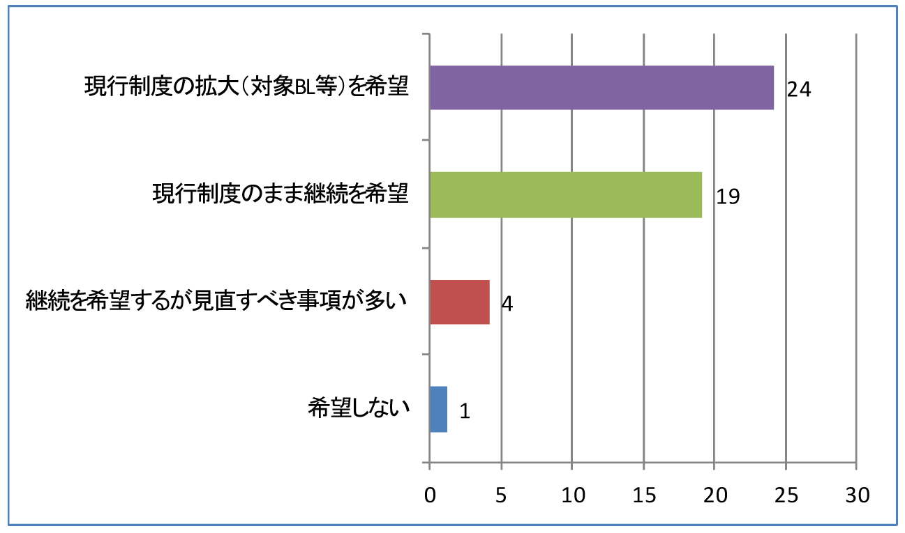

1. はじめに2. 公募の内容
3. 成果公開の考え方
4. 実施の経緯と流れ
5. 結果
6. 民間企業利用への効果
7. 利用者アンケートの結果と今後の課題
8. 課題利用報告書
* 送付を希望される方は、連絡先（氏名、所属、〒住所、E-mail）をご記入の上、 事務局 support@spring8.or.jp までE-mailでご連絡ください。
産業利用の更なる促進を目的に、平成17年度(2005B期)より文部科学省のプログラムとして先端大型研究施設 戦略活用プログラム（戦略活用プログラム）が実施されて支援体制の整備が進み、利用実績も増加すると共に 産業利用推進室の活動も軌道に乗ってきた。平成19年度（2007A期）から、重点産業利用課題は領域指定型の 重点研究課題の一つとして承認され、先に実施された戦略活用プログラムを継承する施策として位置付けて実施 されている。
- 公募の分類
本プログラムで募集する課題は「新規利用者」、「新領域」、「産業基盤共通」と「先端技術開発」の4つに 分類している。
「新規利用者」とは、申請代表者が、これまで、一般課題への応募などを含め、SPring-8を利用した ことのない利用者を指している。但し、事業規模が相当程度大きく事業範囲が多岐に及ぶ企業で、これらの 企業が既に利用している場合には、既に利用している事業分野とは異なる新規分野からの新たなユーザーであれ ば、「新規利用者」として認めている。
「新領域」とは、申請者の利用経験に関係なく、これまでSPring-8で実施されたことがない産業領域、あるい は、近年開発された新手法を用いることによって新たな展開が可能になる産業領域を指している。新領域の例示 を下記に示しているが、これ以外でも新規性が認められる研究領域であれば、新領域の対象になる。
○コンクリート等建築資材⇒三次元内部構造をX線CTによる撮影
○ヘルスケア⇒毛髪や皮膚の構造をX線回折・散乱及び透視画像で解析
○医薬品原薬⇒粉末X線回折による構造解析
○硬X線光電子分光法⇒薄膜材料の内部界面の状態解析
○環境負荷物質微量分析⇒大気・水などの重金属汚染物質の化学状態
○耐腐食構造材⇒金属材料の表層やサビの構造・状態分析
○高密度記録装置⇒DVD、HDD等の新規記録材料の薄膜構造・状態分析
「産業基盤共通」とは、それぞれの産業分野に共通する課題を解決する目的、あるいは産業利用に有効な手法 の共同開発を目的として、複数の企業を含むグループが一体となって取り組むもので、新計測技術の確立、共通 課題のデータベース化等を図る研究を指している。申請代表者が複数の企業を含むグループを取りまとめて、1つ の課題として申請して頂く。ここで言う「複数の企業」とは、それぞれ参加する企業が同等かつ独立に成果を 利用できる関係にあることを想定している。したがって、産学官連携の研究グループによる利用の場合には、学 と官は「複数の企業」としてカウントされない。
「先端技術開発」とは、ユーザーが実施するイノベーション型の技術開発課題で、成果の企業業績への貢献、 あるいは社会還元を目指した研究を指している。
- 公募の回数
BL19B2（産業利用Ⅰ）、BL14B2（産業利用Ⅱ）、BL46XU（産業利用Ⅲ）の3本のビームラインは、2007B期から課題 公募を2回に分けて実施している。これら3本の産業利用ビームラインを除く共用ビームラインのうち、重点産業利 用課題にビームタイムを割り当てた対象ビームラインでは、これまで通り、2011A期の課題公募では1回である。
SPring-8を利用して得られた実験・解析結果及び成果は、以下の利用報告書に取りまとめて提出してもらう。
- 利用報告書Experiment Report（英文または和文）
利用終了日から60日以内にオンライン提出。 - 重点産業利用課題報告書（原則和文）
課題採択後に利用業務部より送付される文書に記載されている締切日までに提出。 なお、提出方法は「電子データ（原則としてMSワード）」を電子メールまたは郵送で所定の宛先に提出。
上記の2011A期の報告書のうち「利用報告書Experiment Report」は2011A期終了後60日目から2週間後 にWeb上で公開される。「重点産業利用課題報告書」は印刷公表とする。ただし、利用者が提出した報告 書について、製品化や特許取得などの理由により公開の延期を希望する場合は、財団法人高輝度光科学 研究センターが適当と認めた場合に限り最大2年間延期することができる（2つの報告書自体は、締切日 までに必ず提出してもらう）。また、公開延期期間満了時には、公開延期を認められた申請時の理由に 対して、結果・成果等をまとめて報告をしてもらう。
- 重点領域の指定
重点産業利用課題が領域指定型の重点研究課題として、平成19年1月26日に重点領域推進委員会で 平成19年度と平成20年度の2年間指定を受けた。さらに平成20年10月2日の第6回選定委員会で平成23 年度までの継続が承認され、重点産業利用課題は領域指定型の重点研究課題（公募）として実施され ている。 - 課題選定
課題の選考は、学識経験者、産業界等の有識者から構成される「利用研究課題審査委員会」 （以下「課題審査委員会」という。）により実施される。課題審査委員会は、「重点産業利用領域」 として領域指定された趣旨に照らして優秀と認められる課題を選定する。
審査は非公開で行われるが、申請課題との利害関係者は当該課題の審査から排除される。また、 各委員は委員として取得した一切の情報を委員の職にある期間だけでなくその職を退いた後も第三者 に漏洩しないこと、情報を善良な管理者の注意義務をもって管理すること等の秘密保持を遵守するこ とが義務付けられている。 - 審査の手順
審査は以下の手順により実施される。- 形式審査
提出された申請書類について、応募の要件を満たしているかについて審査する。 なお、応募の要件を満たしていないものは、以降の審査の対象から除外される場合がある。 - 書類審査
課題審査委員会の下に設置する産業利用分科会により、書類審査を実施する。 - 最終審査
書類審査における評価を踏まえ、課題審査委員会において審査を実施し採択課題を決定する。
- 形式審査
- 審査の観点
審査（形式審査を除く）は、以下の観点に重点を置いて実施される。- 科学技術における先端性を有すること
- 産業利用上の成果創出に資すること
- 課題分類の趣旨に合致すること
- 研究手段としてのSPring-8の必要性
- 実験内容の技術的な実施可能性
- 実験内容の安全性
- 利用者支援
コーディネーター並びに産業利用支援グループが中心となり、課題毎に担当者をおき、 BL担当者の協力の下、全所的に利用者支援を実施した。支援の内容は、重点分野における実験環境の整備、 コーディネーター及びスタッフによる実験企画・準備、実験実施、実験解析に至る技術支援などからなる。 - 利用実験
平成23年4月～平成23年7月の期間で実施された利用実験課題である。なお、2011A期に採択された課題に 加えて2010B期に一年課題として採択された4課題が実施された。 - 報告
平成23年度2011A期の重点産業利用課題の成果は、平成24年9月に開催予定の「第9回産業利用報告会」に おいて2011B期の課題とともに口頭及びポスター形式での報告を予定している。
以下に平成23年度2011A期の重点産業利用課題の応募・採択結果についてまとめる。
- 応募・採択結果
表1. 募集時期及び研究機関別応募・採択結果
＊応募数・採択数には、重点産業利用課題と同時に審査されるが、採択後は一般課 題に分類される下記の12条課題は除外している。募集時期 機関分類 応募数＊ 採択数＊ 採択率（%） 第1回募集 学官 36 29 80.6 産業界 60 37 61.7 合計 96 66 68.8 第2回募集 学官 21 6 28.6 産業界 21 5 23.8 合計 42 11 26.2 総計 138 77 55.8
第1回：応募3課題 採択3課題
第2回：応募3課題 採択2課題 不採択1課題
重点産業利用課題で不採択となり、一般課題として再審査されて採択された産業界8課題、 学官1課題（第1回募集のみ）は採択数から除外している。
表1に示すとおり、第1回募集の平均採択率は68.8%で第2回募集の26.2%の約2.5倍となっている。 募集が3本の産業利用ビームラインに限られること、及び募集する利用期のビームタイムが 第1回募集の半分程度であることから、以前から第2回募集の方が第1回募集よりも採択率が低い 傾向にあったが、一層顕著になっている。これは成果専有課題や成果公開優先課題の増加により 重点産業利用課題に配分できるビームタイムが減少したことによるものである。特に第2回募集 では民間企業がBL46XUに申請した課題の約半数が成果専有課題であるなど、民間企業による 成果専有課題の増加が採択率低下の大きな原因となっている。
- 分類
表2. 募集時期及び研究機関別・領域別採択結果
＊注）"新規利用者"もしくは"産業基盤共通"で申請されたものの要件を満たしていない課題は "先端技術開発"に再分類して審査を行った。表2の値は再分類の結果を反映したものである。募集時期 領域分類 産業界 学官 産学官合計 第1回募集 産業基盤共通 0 5 5 新規利用者 4 3 7 新領域 9 5 14 先端技術開発 24 16 40 合計 37 29 66 第2回募集 産業基盤共通 0 0 0 新規利用者 2 0 2 新領域 1 1 2 先端技術開発 2 5 7 合計 5 6 11
表2に示すように、産業界、学官ともに先端技術開発が他の3分類よりも著しく多いことはこれまで と同様である。新規利用者や新領域は減少傾向にあるが、これは産業界による放射光利用が定着を 示唆するものである。
- 利用報告書の公開日延期
2011A期で実施した課題について利用報告書公開日延期申請が提出された課題の内訳は次の通りである。
○公開日延長許可：13課題
理由内訳（複数回答有り）
a.知的財産権の取得のため：10課題
b.事業への適用のため：9課題（うち6課題は、a.知的財産取得と重複）
c.その他の理由：1課題（a.知的財産取得と重複）
○公開日延長不許可：なし
下記の表3は、2011A期に公開日延期許可された課題を分野別に分類した結果であり、 エレクトロニクスでは発光素子、エネルギーでは二次電池・燃料電池など技術開発が 活発なテーマを含む分野で公開日延期制度の利用が多くなっている。
表3. 分野別公開日延期許可課題
分野 課題件数 エレクトロニクス 5 環境・エネルギー 4 素材(金属・高分子等) 2 製薬・生活用品 2 その他 0 合計 13
- 産官学の動向
- 研究機関
本プログラムでは産業界にとって有効な利用手法の開発が産学官連携により 積極的に展開されるとの観点から、民間企業のみならず、大学等の公的部門からの 応募も受け入れることにしている。採択課題に対する民間企業の割合は2009A期 以降減少傾向にあるが、2011A期の採択課題に占める民間企業の割合は55.8%と最も 低くなった。また、これまでは第1回募集、第2回募集ともに産業界の採択率が学官 を上回っていたが、2010A期は第1回第2回募集ともに学官の採択率よりも産業界の 採択率が低くなった。この傾向は第１回募集で顕著で、重点産業利用課題に割り 当てるビームタイムが少ないBL14B2、BL19B2、BL46XU以外のビームラインで産業界の 採択率が低い（約43%）であることがその原因である。一方、重点産業利用課題で 不採択になり、改めて一般課題として採択された8課題を含めた産業界の採択率は 2010A期とほぼ同じ約75%である。これは、産業利用以外の共用ビームラインで確保 している重点産業利用課題のビームタイムが需要を下回っていること、及び一部の 産業界ユーザーは重点産業利用課題のような保護制度がなくても産業利用以外の 分野の課題と競合できる程度にまで放射光利用に習熟したことを示唆している。
- 新規利用者
採択された新規利用者の表2のとおり9課題で2010B期の7課題より若干増加している。 これは新規利用者の課題はB期よりもA期が多いこれまでの傾向を反映したものである 一方、2010A期に採択された13課題と比較すると大幅な減少と言わざるを得ない。 新規利用者の採択課題数は08A期以降減少傾向にあるが、それが一層明瞭になり、 産業分野の利用が"拡大"から"定着"の流れになりつつあることを示唆するものと考える。 一方、放射光利用技術が必要とされる産業分野、技術分野は年々変化するため新規利用 者拡大は今後も必要な活動テーマである。
- 産業基盤共通
複数の企業を含むグループが一体となって取り組む「産業基盤共通」の課題は、 表2に示す通り2011A期では第一回の募集で5課題が採択された。採択された課題 はいずれも申請代表者が学官の研究機関に所属している。産業基盤共通に分類 される課題は2008B期までは5-7件が採択されていたが、2009A期は3件、2009B期 は4件、2010Aは2件と減少傾向であった。今回の採択は2010B期より1件増の5件 で減少に歯止めがかかった。
- 分野別分類
図1は、申請代表者の申告に基づいて分類した分野別採択課題数を示している。 産学官の総計ではエレクトロニクス分野（EL）の課題が多く、次いで、素材分野（MA）、 環境・エネルギー分野（EN）の順である。産業界だけに限れば、素材分野（MA）、 エレクトロニクス分野（EL）、環境･エネルギー分野（EN）の順であり、事業動向を 反映して10年前は放射光利用の中心であったエレクトロニクス分野の減少が一層明瞭 になった。なお、これまで2010Aまでは順調に増加してきた環境･エネルギー分野が 大きく減少した。この分野に属する二次電池、燃料電池、太陽電池などの新エネルギ ーデバイス開発は官民問わず国家的な技術開発テーマであるにも関わらず産業界の 減少が目立つ。この分野での産業界の重点産業利用課題の減少の原因は、二次電池や 燃料電池開発で広く用いられているXAFSや粉末X線回折の利用が、民間企業においては 重点産業利用から測定代行等の成果専有課題に移行したものと考えている。
- 研究機関
図2は2011A期の被災量子ビーム施設ユーザー支援課題を除いた共同利用研究実施課題
（共用ビームラインで実施した課題）において、民間企業に所属する実験責任者の課題数
が全体の19.6％であることを示している。その内訳は、重点産業利用課題が6.6％、測定代行
を含む成果専有課題が10.6％である。この2つを合わせて17.2％となり、民間企業が共同利用
研究課題で実施したもののうち、約88％が成果公開延期制度のある重点産業利用課題あるいは
成果専有課題の2つの利用制度で実施され、これら2つの利用制度が旨く使い分けられている
ことが分かる。この結果は、本制度が民間企業に根付いてきていることを示すものである。
なお、2011A期は民間企業が実施した成果専有課題数が重点産業利用課題と成果非専有の一般課題
の総和より多くなった。これは、XAFS及び粉末X線回折の測定代行の増加が主な要因であり、
測定代行が民間企業ユーザーに定着しつつあることを示すものである。なお、東日本大震災の影響か
2010A期より民間企業が実施した課題の総数が若干減少している。2011B期以降に震災の影響が顕著
に表れる可能性もあるため、当面は注意を払う必要がある。
図3も測定代行を含む成果専有課題の重点産業利用課題に対する割合が増加傾向にあり、
重点産業利用課題等を通じて放射光の有用性が認識され、産業界に放射光利用技術が分析
評価技術のひとつとして定着しつつあることを示唆するものと考える。図4は、利用技術
分野別(ビームライン別)民間企業実施課題数の応募課題分類を示しているが、
産業利用Ⅰ（BL19B2）、産業利用Ⅱ（BL14B2）、産業利用Ⅲ（BL46XU）の3本のビームライン
では、成果専有課題の割合が他のビームラインと比較して著しく多く、半数以上が成果専有課題
である。特に、BL14B2とBL19B2では測定代行の課題数が通常の成果専有課題を上回り、測定代行
が新たなSPring-8利用の制度として民間企業に根付きつつあることを示している。一方、成果専有
課題や成果公開優先利用課題の増加によって、重点産業利用課題に配分できるビームタイムが減少
傾向にある。特にBL46XUでは利用成果の専有ではなく利用機会の確実な確保のために成果専有課題
を利用する例が少なからずあり、HAXPESなど産業分野で需要の高い利用技術に供給するビームタイム
が不足する状況になりつつある。実験の効率化による採択率向上を目指した機器整備を行うとともに、
HAXPES測定が可能な共用ビームライン整備の検討が必要となりつつある。
2011A期に実施した重点産業利用課題の実験責任者に対して2011年9月26日～10月31日を
回答期間としWEBより回答を入力する形式のアンケートを実施した。2011A期を通じて
2課題以上を実施した実験責任者もいるため、アンケートを依頼した人数は68名であり、
49件の回答があった。今回のアンケートの回答率は約72%となり多くの利用者の意見を反映
したものと考えられる。
図5、6は課題募集の時期、頻度についての回答結果である。これらの図が示すように12月、
3月、6月、9月に行っている課題募集期間と年4回募集は概ね評価されているが、"12月に申請、
1月に採択で、4月以降の予定を決めるのは、難しい。"との指摘があった。この指摘のように
現行の制度ではA期、B期とも募集締切日から実験開始日まで4か月弱の期間があるため技術開発
と歩調を揃えた利用機会を提供できているとはいえない。今後、より柔軟な利用機会を提供
できる制度、例えば生命科学分野で実施している分科会留保などを参考に課題募集と審査制度
の検討が必要である。
図7、8は利用前及び利用中の職員からの支援に対する評価である。これらの図が示すように、
利用前及び利用中の支援に対しては多くの利用者に満足してもらえていることがうかがえる。
なお、これらの図が示すように少数ではあるが利用前の技術相談等の支援について"支援は
不適切だった"、"支援を受けなかった"とする回答があり、実験前の事前準備に対する支援の
更なる充実が必要であることを示す結果であった。
図9は重点産業利用課題の制度継続希望の回答結果である。約90%が"現状のまま継続"もしくは
"拡大"を希望と回答し、産業分野の利用者にとって有効な制度と評価されているものと考えら
れる。重点産業利用課題は2011年度で終了するがこのアンケート結果にもあるように大多数の
ユーザーから支持されている制度であるため、2012年以降も重点産業利用課題に類似した利用
制度にすることが適切と考えられる。

図1. 重点産業利用課題における分野別採択課題数

図2. 2011A期 共同利用研究実施課題における民間企業の実験責任者の割合

図3. 民間企業による共同利用研究実施課題の課題分類別推移

図4. 2011A期 利用技術分野別(ビームライン別)民間企業実施課題数

図5. "募集の時期（12月、3月、6月、9月）は適切ですか"への回答

図6. "適切な課題募集の頻度は"への回答

図7. "利用前のSPring-8職員の技術相談等の支援は適切でしたか"への回答

図8. "利用実験時のSPring-8側の技術支援は適切でしたか"への回答

図9．"重点産業利用課題に類した制度の継続を希望されますか"への回答
この成果報告書に掲載される課題報告書は、2011A利用期に実施された課題のうち、 利用報告書公開日延期申請許可となったものは除いている。